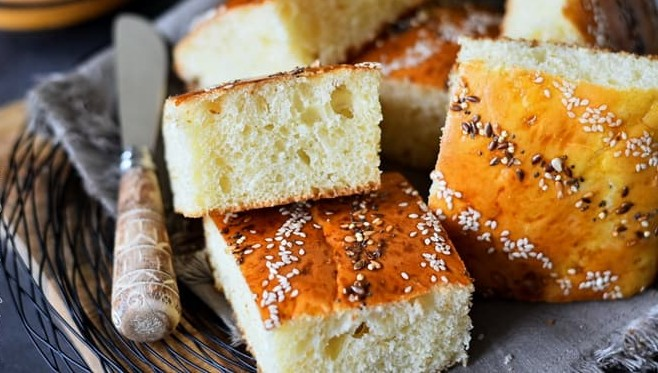

Khobz el Dar (Algerian Semolina Bread)

"I COULD EAT THIS ALL DAY !"
soft, crunchy, lite.
You can merge it with other dishes or you could enjoy its calm sweet but salty flavor separately.
Ingredients
- ½ cup semolina flour
- 2 tablespoons semolina flour
- 3 tablespoons sesame seeds, divided
- 1 tablespoon white sugar
- 1 teaspoon active dry yeast
- ¾ teaspoon salt
- ¼ cup vegetable oil
- 1 egg
- 1 egg, separated
- 1 cup lukewarm milk
- 2 ¾ cups all-purpose flour
- 2 tablespoons all-purpose flour, or more as needed
- 1 teaspoon water
Steps
-
Mix 1/2 cup plus 2 tablespoons semolina, 2 tablespoons sesame seeds, sugar, yeast, and salt together in
a
large
bowl.
-
Whisk in oil, egg, and egg white. Stir in warm milk slowly until a liquid dough forms.
-
Cover the bowl with a plate or plastic wrap; let stand at room temperature until frothy, about 1 hour.
-
Stir in 2 3/4 cups flour with a wooden spoon until a sticky dough forms. Cover again and allow to rest
for
30
minutes.
-
Line a baking sheet with parchment paper or a baking mat.
-
Sprinkle 1 tablespoon flour over the dough and your hands. Mix dough, adding flour as needed, 1
tablespoon
at a
time, until it pulls away from the sides of the bowl.
-
Shape into a round loaf and place on the prepared baking
sheet.
-
Cover loosely with a towel and let rise for 1 hour in a warm place until loaf doubles in volume.
-
Preheat oven to 400 degrees F (200 degrees C).
-
Beat egg yolk and water in a bowl with a fork; brush over the entire surface of the loaf. Sprinkle 1
tablespoon
sesame seeds on top.
-
Bake in the preheated oven until loaf is golden brown, about 20 to 25 minutes.